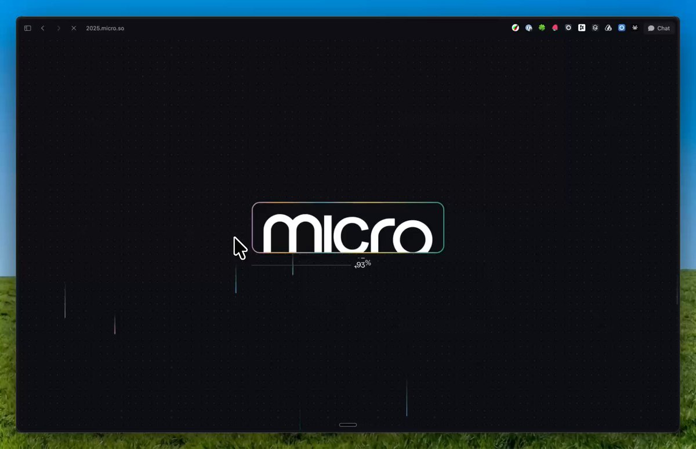
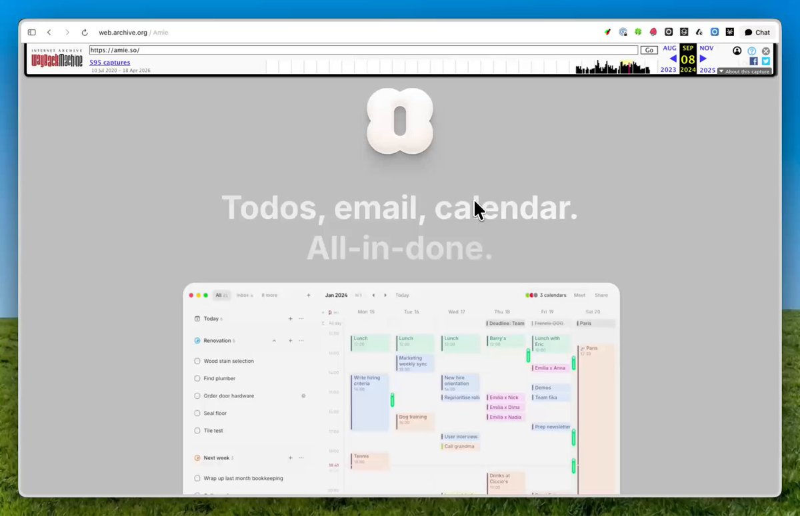
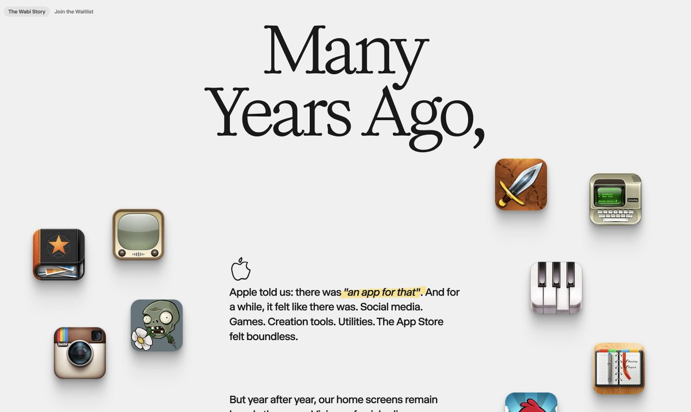
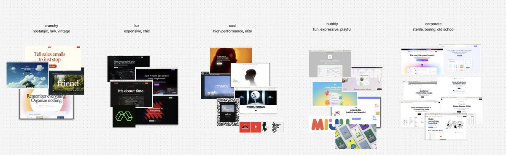
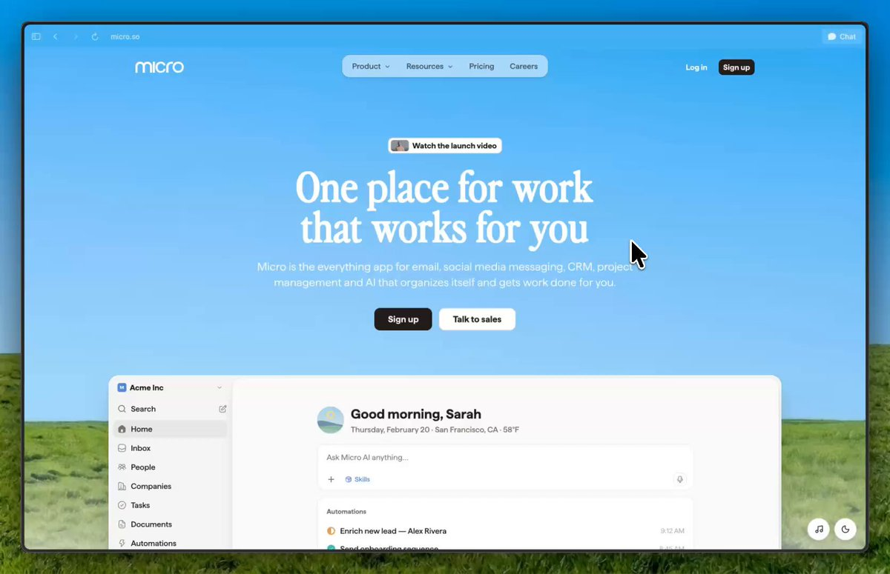
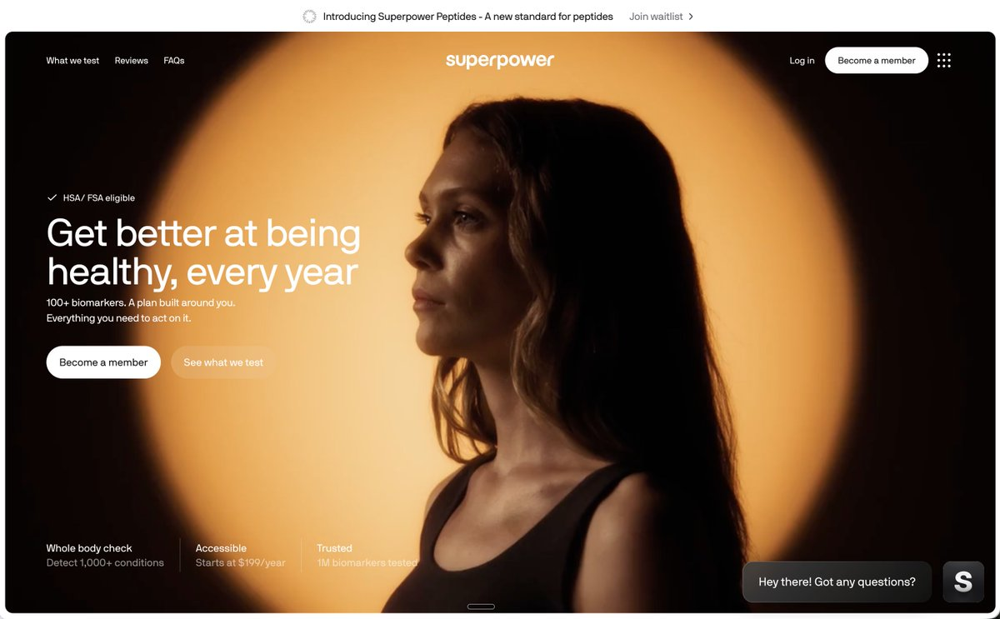
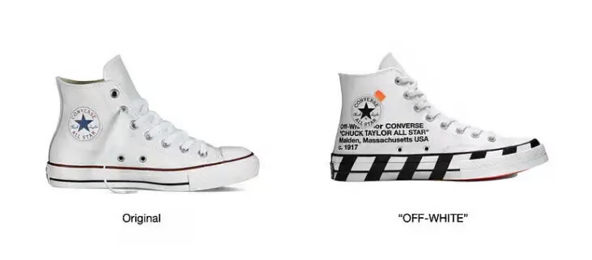
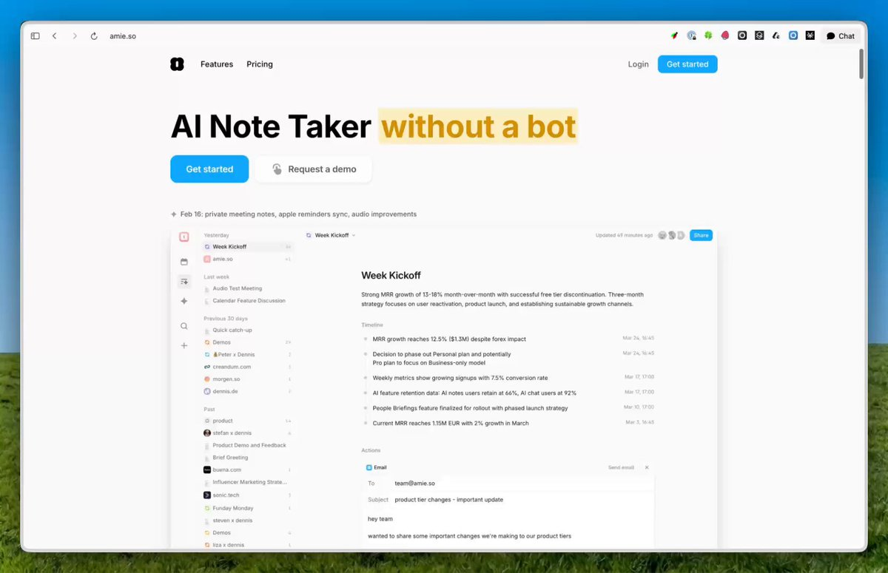
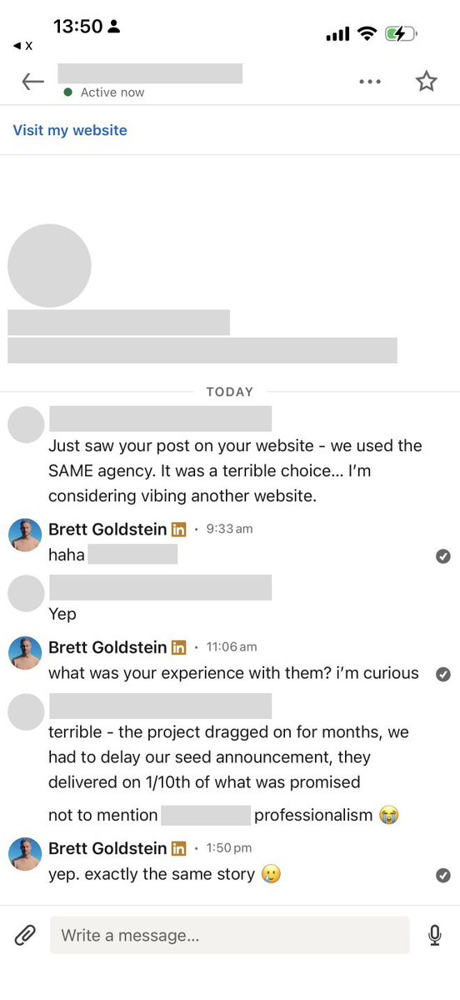

Last year we spent $150K on our landing page. It took 6 months start to "finish" (it was only about 70% done) and was one of the worst experiences of my career. This year, I spent about $200 total building it myself (a non-technical founder who has never had an official design job) over a few weekends, and wound up with a 10x better one. Here's a quick demo:

The agency from hell
We were referred to a design agency by a very well-respected founder who had won awards for the incredible website they did for him. They offered us a huge discount and assured us we'd meet our launch deadline. It could not have seemed more ideal. I was wrong.... we got catfished.
Over the course of the following months the agency would Produce terrible designs Ignore requests (which were quite clear since I'm a designer myself) Ghosted us for weeks Pushed timelines back over and over And even screamed at us and made fun of our product (which was still in its early, buggy infancy) The end result was an incomplete brand guide and landing page that was months late and was 3x over budget, going from about $40K to $150K Unfortunately we weren't the only ones who had this experience.
The landing page did win a design award and looked incredible to the design muggle. But I personally had to push the agency to include elements we get the most praise for (like the hero image). The site also used a handful of cheap tricks to win favor (lotssssss of animations) and if you look at it with a trained eye, you can see it makes tons of basic design mistakes all over. Take a look for yourself, see if you can spot the issues (answer at the end of this article)*

Coming out of that experience, I realized I may never be able to convince myself to work with a design agency again. Trust was broken. Unfortunately this is actually quite a common story with agencies since the teams tend to change from one project to the next so quality and experience is also variable. Some agencies also view themselves as an artist you are commissioning to execute their beautiful vision, not yours. This obviously makes them incredibly difficult to work with.
What kind of website to build
I don't regret having a fancy animation-heavy landing page to start though. It created a lot of word of mouth with prospective customers and investors. In fact I think it is part of the optimal playbook for startups:
1st Landing Page: The Mission (Pre-Product)
Your first website should be a single page with your mission statement written out in a few paragraphs and an email capture form for the waitlist.
All great companies "start with why" and it's the right level of effort before you're out of the idea maze and have a product to talk about.
2nd Landing Page: The Big Splash (Pre-PMF)
By the time you are ready for a private beta or to talk about what you're building more broadly, you'll need more to show on your website. You may not have the features yet to stand out in the market, gain trust with customers, and wow prospective investors, but a fancy website can get you all of these. Its also a great way to establish your brand (which you should create around this time).
The best examples are runway.com (2024), amie.so (2024), 2025.micro.so

3rd Landing Page: The Funnel (Post-PMF)
Once you're in market and leaning into growth, you want your landing page to be as optimized as possible - fancy animations and stories really don't help there. This landing page should be stripped down and ruthlessly optimized for conversion. Amie made headlines when they pivoted from their fancy landing page to this hyper optimized, no frills page.
How not to build a landing page
Within the last 6 months, a few ways of building landing pages have become absolutely obsolete as a result of AI:
No-code platforms
Framer, Wix, and every other no-code landing page builder position themselves as the easiest and cheapest way to build beautiful landing pages. This was true when the alternative (coding) was difficult and expensive, but it isn't anymore. In fact, nocode platforms are so complex these days that you need specialists to be able to make simple edits if your page is somewhat complex.
Design Agencies
You probably need a strong agency or freelance designer to create a design system and brand guide for you, though even that may not be necessary in another year or so. Either way, you definitely do not need or want an agency to build the landing page for you anymore. There are a few reasons: Design agencies typically focus on design, not coding or optimization. So for any landing page outside of the 2nd type, they are going to deliver a subpar product on average You can build it yourself faster, cheaper and better (more on this in the next section) They charge you like crazy. Prices have still not adjusted after AI has made building landing pages easier as of this writing.
For our 3rd landing page after the fancy one, I didn't have a ton of time to pull it together, so I started working with a Framer designer through a Framer program that offers free landing pages to startups. The process was unbearably slow, the designs were bad, and it was impossible to make edits to what the designer did. With our launch coming up, I decided to give myself a weekend to see what I could code up myself. If I was happy enough with the result, I'd fire the designer and go all in. ... I fired the designer. I realize this comes off very anti-agency. There are definitely fantastic agencies out there that deliver 1000x what they charge.
My belief however, is that this is not the average agency and most early-stage founders are better off avoiding agencies altogether until they've reached the scale that they can afford one of these better ones.
How to build a landing page
In just a weekend, I shipped an incredible landing page that even included a blog and an interactive replica of our product. Here are some of the tricks I learned:
Start with research
The first thing I do before I do any coding these days is research. You can read the full rundown here
But to summarize, ask your agent to do this: Do deep research best practices for landing page design for your industry (core sections, copy for each, CTAs, etc) Do deep research on your company - ideally you've connected to email, slack and other sources that will allow it to pull how you talk about your company. Micro is by far the best product here when your agent needs personal context like this (core value prop, features, positioning, competitors, etc) Do deep research on your competitors to see how they position themselves. Especially look at incumbents and established startups who have had a longer time to optimize their messaging and landing pages.
Use all of that to create an outline of the full landing page with suggested copy (tweak this until its where you want it) Optionally, you can extend this research to include other components of a website like the blog, pricing pages, SEO/GEO, etc. I'd recommend doing this because it's very quick to add everything.
Get inspiration
Check out landing page aggregator website like Landingfolio and do some research (as mentioned above) on other players in your space. Take notes on patterns you see in terms of broad aesthetics and specific design choices. Even better is do this for landing pages and brands that you like outside of tech (more on this later).
Set up a design system
A design system is just a set of rules for landing pages and other design assets. It encodes colors, fonts, padding, imagery, etc. This is something that you may want to work with a designer on, but you can probably get a solid one with some prompting (starting with research as mentioned above) and various AI design tools like Claude Design. You'll want to apply the system to tailwind or another UI framework so its easy to use in your landing page. You may also want to write up a Design System context document to give the agent any extra context (especially for things not in code like imagery).

Pick a UI component library
This is probably the most important trick. If you try building everything on the site from scratch it will look like crap. The best thing to do is start with a professional component library like shadcn or Aceternity and apply your design system and personal preferences to it. These libraries typically have 100s of beautiful, mobile optimized components and even entire landing page templates. We used one for our latest landing page, which is why it was so quick to get something fantastic. One word of warning is that the more popular a library gets, the more you'll need to customize it to ensure it still comes off original. Some libraries like shadcn are so popular that using them completely out of the box without any edits is a no go.
Ship it
Tell your agent to start building. Host it somewhere like Vercel. Get feedback from people and iterate. That's it!
How to make a top 1% landing page
Everything above is the nuts and bolts of setting up a landing page yourself but it's not going to win you design awards or points on taste. I'll write another essay about this, but having top 1% taste is easy. Here's how:
Zig when others Zag
You probably have a lot of competition. We all do. The best way to stand out is to be different. The most systematic way to do this is to try to place your competitors' brands/landing pages in a few broad categories for vibe. When we looked at CRM and all-in-one tools, we saw a few categories (that usually apply to other verticals as well): Corporate (HubSpot, Clickup, Airtable) - sharp corners, underdesigned, stuffy. Makes the product feel trustworthy and reliable but behind the times and slow. Crunchy (Friend, Browser Company) - nostalgic old-school Apple design. Makes the product feel timeless and nostalgic, but is getting oversaturated right now. Bubbly (Notion, Attio, Gmail, Amie) - Cute, friendly, simple.

Makes the product feel accessible and fun but unserious. Lux (Superhuman, Monaco) - Chic, Nike-style (dark) design that makes the product feel epic and precise but effortful. Cool (Superpower, Cosmos, Lightfield) - Pristine, Apple-style (light) design that makes the product feel precise and clean but sterile.
Since most modern players were using the Lux/Cool branding, we chose to counterposition as the opposite. Instead of the hard work, grinder energy of Nike, we went for a relaxing, happy "touch grass" energy. This also aligned with our catch phrase "organized, so you don't have to be" and our vision for people to not have to work as hard to achieve their goals. You can take this beyond visual branding as well. We added a music player to our landing page with custom music from a fictional band we made for our company.
Rhyme with the greats
The easiest way to have great design is just to emulate other great designs. This works well for a few reasons: They are the product of natural selection - The greatest designs are the product of billions of dollars of investment, centuries of accumulated tribal knowledge about aesthetics and human psychology, and years of trial and error. People like things that remind them of things that they like - Research on Familiarity Effect shows people prefer things that are familiar to them, so when your designs are familiar, people like them. Apple is a favorite for startups to rhyme with. They are the most aspirations brand in our industry. But things get really powerful when you explore outside of the tech bubble.

For example your product needs to feel precise, look at athletics, knives, machinery, science. We wanted our brand to feel uplifting and happy and inadvertently stumbled into a combination of Windows XP and Teletubbies, which create intense nostalgia for our target audience.
Superpower's legendary brand also came this way. I remember Jacob Peters, the cofounder and good friend of mine, telling me he wanted to create "the Nike of Health." He executed exactly that.
Change only 3%
To create something new, Virgil Abloh, who is essentially the Steve Jobs of the fashion world, said you really only have to change something that exists 3%.

Why so little? As mentioned above, things that exist already have been stress tested and are familiar to people, so they are great starting points. But most importantly, for that same reason, if you change something too much it becomes unrecognizable and hard to relate to or use. So when creating your landing page, stick to the patterns that exist and only change a few things to adapt them to your brand.

How to future-proof yourself
The progress of AI models is what unlocked this opportunity, but it is also what will create new challenges. The simple reality is that when things get easier to do, more people do them, and thus there's more competition all around. For founders, this means having a beautiful landing page is now the expectation, not the exception. Investing in one and continuing to develop it is paramount if you want to stick out. For design agencies, the expectations for what you deliver for clients are even higher. If they can build landing pages themselves, you'll have to offer more services, offer them cheaper, and ensure your customer experience is 10/10. The days of "trust me I'm an arteeest" $150K landing pages are over.
For everyone, things are moving so quickly that the most important thing to do is to just stay on top of things by following the right accounts on social media, playing with the latest tools, and updating your priors accordingly.
It's an amazing time to be a builder and incredibly exciting how easy it is for anyone to create a high quality landing page. All that said, if you build a product that is truly amazing, you don't even need a nice landing page :)
*Highlighted issues with our original $150K landing page: Hero text explaining what the product does is very very small, main CTA is hard to find, animations are choppy or delayed (especially on mobile), mock UIs inconsistent with product (and with other mock UIs on the website), too many colors (that don't match), too many font sizes and weights, too many different visual styles mixed together and were inconsistent with mission (help people relax/touch grass), some fonts way too small, and some sections scroll off before they are legible.
